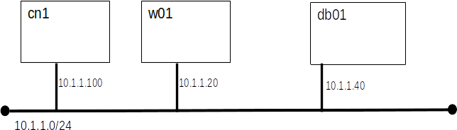

Today we will explore a leading tool for automated systems configuration management. We will use Ansible to configure systems to run the TRS from the 3-Tier lab.
A useful short introduction can be found in this Ansible Video, the first 9 and half minutes are the most valuable.
The commands listed in this lab are targeted to Ubuntu 20.4 as represented by the class vm.
apt install ansible
Ansible uses ssh to communicate between the control node and the managed nodes. Configure your environment so that alice can logon from cn1 to all the managed nodes. You will recall that our Ubuntu systems do not allow direct login as root.
ssh-keygen
mkdir ~/.ssh chmod 700 ~/.ssh
scp id_rsa.pub alice@10.1.1.20:./.ssh/authorized_keys
ssh alice@w01 hostname
Note: all Ansible configuration and commands will be run on cn1
[servers] w01 db01 [web] w01 [db] db01
ansible -m ping allshould return something like...
w01 | SUCCESS => {
"ansible_facts": {
"discovered_interpreter_python": "/usr/bin/python"
},
"changed": false,
"ping": "pong"
}
db01 | SUCCESS => {
"ansible_facts": {
"discovered_interpreter_python": "/usr/bin/python"
},
"changed": false,
"ping": "pong"
}
Ansible uses playbooks to group commands.
set expandtab set tabstop=4or if you must... Make your ~/.nanorc file look like this:
set tabsize 4 set tabstospaces
---
- name: configure web server
hosts: web
remote_user: alice
become: yes
become_method: sudo
tasks:
- name: update apt cache
apt:
update_cache: yes
- name: Install the latest version of Apache
apt:
name: apache2
state: present
ansible-playbook -K web_config.yml
ansible-playbook -K web_config.yml
---
- name: configure web server
hosts: web
remote_user: alice
become: yes
become_method: sudo
tasks:
- name: update apt cache
apt:
update_cache: yes
- name: Install the latest version of Apache and libs
apt:
name:
- apache2
- mariadb-client
- mariadb-server
- php
- libapache2-mod-php
- php-mysqli
state: present
ansible-playbook -K web_config.yml
- name: ufw allow http
ufw:
rule: allow
port: '80'
proto: tcp
- name: ufw allow ssh
ufw:
rule: allow
port: '22'
proto: tcp
- name: ufw enable
ufw:
rule: allow
state: enabled
Create a second play book named db_config.yml containing the tasks required to get the DB server ready for installation of the application.
It is common to need to deploy more than one web server. Let's add w02 to our environment with an address of 10.1.1.30.
Submit our db_config.yml to Canvas.
We will be building on what we did here in the next lab, so keep your VMs. Or, at least keep your Ansible files.